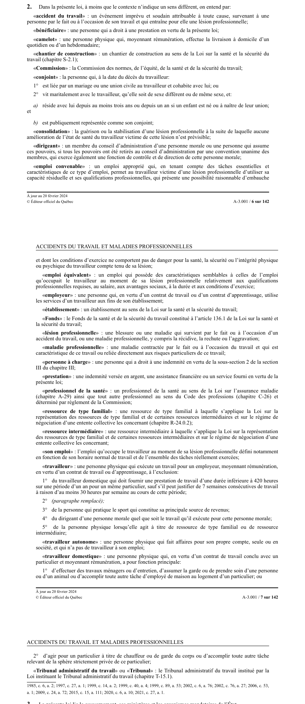

art-2-LATMP : définitions des termes de la loi
Article liminaire de définitions : il fixe, pour toute la loi et sauf si le contexte impose un sens différent, le vocabulaire qui commande l'ouverture du droit à indemnisation.
Le trio d'ouverture : « accident du travail » (événement imprévu et soudain, attribuable à toute cause, survenant par le fait ou à l'occasion du travail), « maladie professionnelle » (contractée par le fait ou à l'occasion du travail et caractéristique de ce travail ou reliée à ses risques particuliers), « lésion professionnelle » (blessure ou maladie issue de l'un ou de l'autre, récidive, rechute et aggravation comprises).
Le vocabulaire du retour au travail : « emploi convenable » (approprié, qui utilise la capacité résiduelle, sans danger, avec une possibilité raisonnable d'embauche), « emploi équivalent » (mêmes qualifications, salaire, avantages sociaux, durée et conditions), « son emploi » (celui occupé au moment de la lésion) et « consolidation » (guérison ou stabilisation sans amélioration prévisible).
Qui est « travailleur » : la personne physique liée par un contrat de travail ou d'apprentissage, moyennant rémunération. Cinq exclusions, dont le travailleur domestique qui fournit moins de 420 heures sur un an chez un même particulier, sauf s'il justifie 7 semaines consécutives d'au moins 30 heures par semaine ; sont aussi exclus l'athlète dont le sport est sa principale source de revenus, le dirigeant de personne morale et la ressource de type familial ou intermédiaire.
Qui touche au décès : le « conjoint » est la personne mariée ou unie civilement qui cohabite, ou la personne qui vit maritalement, de sexe différent ou de même sexe, depuis au moins 3 ans, délai ramené à 1 an si un enfant est né ou à naître, à condition d'être publiquement représentée comme conjoint.
Le « travailleur autonome » (personne qui fait affaires pour son propre compte, sans travailleur à son emploi) est défini à part et n'est pas un travailleur au sens de la loi.
Nature : définitions · Portée : toute la LATMP.
🌐 LegisQuébec · 📄 PDF officiel (page 6)
Texte officiel
Dans la présente loi, à moins que le contexte n’indique un sens différent, on entend par:
« accident du travail » : un événement imprévu et soudain attribuable à toute cause, survenant à une personne par le fait ou à l’occasion de son travail et qui entraîne pour elle une lésion professionnelle;
« bénéficiaire » : une personne qui a droit à une prestation en vertu de la présente loi;
« camelot » : une personne physique qui, moyennant rémunération, effectue la livraison à domicile d’un quotidien ou d’un hebdomadaire;
« chantier de construction » : un chantier de construction au sens de la Loi sur la santé et la sécurité du travail (chapitre S-2.1);
« Commission » : la Commission des normes, de l’équité, de la santé et de la sécurité du travail;
« conjoint » : la personne qui, à la date du décès du travailleur:
1° est liée par un mariage ou une union civile au travailleur et cohabite avec lui; ou
2° vit maritalement avec le travailleur, qu’elle soit de sexe différent ou de même sexe, et:
a) réside avec lui depuis au moins trois ans ou depuis un an si un enfant est né ou à naître de leur union; et
b) est publiquement représentée comme son conjoint;
« consolidation » : la guérison ou la stabilisation d’une lésion professionnelle à la suite de laquelle aucune amélioration de l’état de santé du travailleur victime de cette lésion n’est prévisible;
« dirigeant » : un membre du conseil d’administration d’une personne morale ou une personne qui assume ces pouvoirs, si tous les pouvoirs ont été retirés au conseil d’administration par une convention unanime des membres, qui exerce également une fonction de contrôle et de direction de cette personne morale;
« emploi convenable » : un emploi approprié qui, en tenant compte des tâches essentielles et caractéristiques de ce type d’emploi, permet au travailleur victime d’une lésion professionnelle d’utiliser sa capacité résiduelle et ses qualifications professionnelles, qui présente une possibilité raisonnable d’embauche et dont les conditions d’exercice ne comportent pas de danger pour la santé, la sécurité ou l’intégrité physique ou psychique du travailleur compte tenu de sa lésion;
« emploi équivalent » : un emploi qui possède des caractéristiques semblables à celles de l’emploi qu’occupait le travailleur au moment de sa lésion professionnelle relativement aux qualifications professionnelles requises, au salaire, aux avantages sociaux, à la durée et aux conditions d’exercice;
« employeur » : une personne qui, en vertu d’un contrat de travail ou d’un contrat d’apprentissage, utilise les services d’un travailleur aux fins de son établissement;
« établissement » : un établissement au sens de la Loi sur la santé et la sécurité du travail;
« Fonds » : le Fonds de la santé et de la sécurité du travail constitué à l’article 136.1 de la Loi sur la santé et la sécurité du travail;
« lésion professionnelle » : une blessure ou une maladie qui survient par le fait ou à l’occasion d’un accident du travail, ou une maladie professionnelle, y compris la récidive, la rechute ou l’aggravation;
« maladie professionnelle » : une maladie contractée par le fait ou à l’occasion du travail et qui est caractéristique de ce travail ou reliée directement aux risques particuliers de ce travail;
« personne à charge » : une personne qui a droit à une indemnité en vertu de la sous-section 2 de la section III du chapitre III;
« prestation » : une indemnité versée en argent, une assistance financière ou un service fourni en vertu de la présente loi;
« professionnel de la santé » : un professionnel de la santé au sens de la Loi sur l’assurance maladie (chapitre A-29) ainsi que tout autre professionnel au sens du Code des professions (chapitre C-26) et déterminé par règlement de la Commission;
« ressource de type familial » : une ressource de type familial à laquelle s’applique la Loi sur la représentation des ressources de type familial et de certaines ressources intermédiaires et sur le régime de négociation d’une entente collective les concernant (chapitre R-24.0.2);
« ressource intermédiaire » : une ressource intermédiaire à laquelle s’applique la Loi sur la représentation des ressources de type familial et de certaines ressources intermédiaires et sur le régime de négociation d’une entente collective les concernant;
« son emploi » : l’emploi qu’occupe le travailleur au moment de sa lésion professionnelle défini notamment en fonction de son horaire normal de travail et de l’ensemble des tâches réellement exercées;
« travailleur » : une personne physique qui exécute un travail pour un employeur, moyennant rémunération, en vertu d’un contrat de travail ou d’apprentissage, à l’exclusion:
1° du travailleur domestique qui doit fournir une prestation de travail d’une durée inférieure à 420 heures sur une période d’un an pour un même particulier, sauf s’il peut justifier de 7 semaines consécutives de travail à raison d’au moins 30 heures par semaine au cours de cette période;
2° (paragraphe remplacé);
3° de la personne qui pratique le sport qui constitue sa principale source de revenus;
4° du dirigeant d’une personne morale quel que soit le travail qu’il exécute pour cette personne morale;
5° de la personne physique lorsqu’elle agit à titre de ressource de type familial ou de ressource intermédiaire;
« travailleur autonome » : une personne physique qui fait affaires pour son propre compte, seule ou en société, et qui n’a pas de travailleur à son emploi;
« travailleur domestique » : une personne physique qui, en vertu d’un contrat de travail conclu avec un particulier et moyennant rémunération, a pour fonction principale:
1° d’effectuer des travaux ménagers ou d’entretien, d’assumer la garde ou de prendre soin d’une personne ou d’un animal ou d’accomplir toute autre tâche d’employé de maison au logement d’un particulier; ou
2° d’agir pour un particulier à titre de chauffeur ou de garde du corps ou d’accomplir toute autre tâche relevant de la sphère strictement privée de ce particulier;
« Tribunal administratif du travail » ou « Tribunal » : le Tribunal administratif du travail institué par la Loi instituant le Tribunal administratif du travail (chapitre T-15.1).
Texte de l’article 2 LATMP, extrait de la couche texte du PDF officiel (page 6), sans OCR ni retouche. La capture ci-dessous et le PDF font foi.
{kind=link}

Toucher l'image pour l'agrandir🔗 Ouvrir a cette page : LATMP.pdf : page 6 · texte a jour au 20 février 2024
Jurisprudence
- Beauchamp et Inspec-Sol inc. (2009 QCCLP 2752)
- Canadelle et CNESST (2014 QCCLP 6290)
Voir aussi
- art. 28 : présomption de lésion professionnelle · présomption : une blessure qui arrive sur les lieux du travail alors que le travailleur est à son travail est présumée une lésion professionnelle.
- art. 29 : présomption de maladie professionnelle · présomption : le travailleur atteint d'une maladie prévue par règlement est présumé atteint d'une maladie professionnelle s'il remplit, au jour du diagnostic, les conditions particulières prévues par ce règlement.
- art. 30 : maladie hors annexe I · présomption : le travailleur qui n'est pas présumé atteint d'une maladie professionnelle.
- 🔧 Modifié par : LMRSST art. 1 · modifie art.
- ↑ Loi : LATMP
Pages qui pointent ici (22)
- art-1-LATMP : objet de la loi, réparation Recueil législatif
- art-1-LMRSST : modifie l'art. 2 LATMP Recueil législatif
- art-100-LATMP : indemnité minimale au conjoint Recueil législatif
- art-2-LATMP Hygiène industrielle
- art-2-LATMP Sécurité industrielle
- art-2-LATMP Toxicologie
- art-204-LATMP : examen médical exigé par la Commission Recueil législatif
- art-28-LATMP : présomption de lésion professionnelle Recueil législatif
- art-29-LATMP : présomption de maladie professionnelle Recueil législatif
- art-32-LATMP : interdiction de représailles Recueil législatif
- Beauchamp et Inspec-Sol inc. Recueil législatif
- Canadelle et CNESST Recueil législatif
- Capacités résiduelles Recueil législatif
- Emploi convenable Recueil législatif
- Index des décisions : table de travail Recueil législatif
- Index thématique des décisions Recueil législatif
- LATMP Recueil législatif
- LATMP : Chapitre I : Application et définitions Recueil législatif
- Lésion professionnelle Recueil législatif
- LMRSST : Chapitre I : Modifications à la LATMP Recueil législatif
- Tremblay et Flexmaster Canada ltée Recueil législatif
- TSPT Recueil législatif